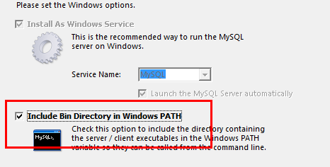

一、需求来源
最近在做一个就业信息发布网站，发布每天的南北校宣讲会信息。此时前端模型已经搭建好，用的是HTML+CSS+JS，JavaScript用到jQuery库，总体上实现了静态页面的设计、UI图标效果的制作、页面动画的制作和信息展示区的模型搭建。
小巧的发布网站已经建地七七八八，万事具备，只差最关键的数据和网络部分了。
二、方案更改
在“早日完成项目”的目标驱动之下，我尝试着自己完成后台服务器的搭建工作。既然是要快速搭建，我能想到的首选就是使用集成开发环境xampp。这是一个后台服务器集成环境，在最新的版本中，xampp集成了Apache、MySQL、PHP、phpMyAdmin、FileZilla和Tomcat，使用的时候只要启动相应模块即可。
虽然，这对于想要快速建后台的同学来说不失为一个快捷简便的捷径，但是如此臃肿的集成环境并不是每一个模块我们都能用得到，并且，在简单的start和stop之间，我们并不能真正地理解每个模块其中的原理，只有自己动手把每个模块独自搭建起来并使它们相互关联，才能方便我们自己的后期维护。
三、集齐模块
要搭建一个后台服务器，有几个必要的模块：一个作为载体的服务器软件、一个数据库、一种后台语言环境，它们分别是Apache服务器、MySQL数据库和PHP环境。此外，为了方便管理数据库，我还增加了一个phpMyAdmin模块，用于在后台以可视化形式对数据库进行增删查改。各模块的版本如下：
Apache：2.4.12
MySQL：5.5.34
PHP：5.6.26
phpMyAdmin：4.4.11
要注意的是，PHP7已经不再用php_mysql组件，而是采用了更新的php_mysqli组件，这对其它模块会有些影响，我最开始用的是php7，在测试mysql_connect函数的时候显示找不到函数，但在查阅了半天资料后确认各个模块的配置并无问题，后来换了较低的5.6.26版本后，一切正常。
各模块都在网上有得下载，这里就不再多言了，下面说说在安装和配置过程中的注意事项。
搭建之前，你需要在某个根目录创建一个文件，比如叫做amp，代表Apache+MySQL+PHP。这个文件夹最终的结果会是这个样子：
1.Apache安装
目前，从网络上下载的Apache模块大都是免安装直接解压的压缩包，那么直接解压到amp里面即可。
2.MySQL安装
MySQL分为客户端和服务器端，我选择的5.5.34版本本身是一个客户端，但是在安装完之后会推荐你再装一个服务器端，这个是必须的，因为我们要的就是一个服务器端的 MySQL。
关于MySQL客户端的安装并没有什么难度，一般来说一路“下一步”即可，一直到最后一步，提示安装服务器端，点击进入，进入以下配置：
首先是选择详细配置，点击下一步：
作为开发者选择Developer Machine，点击下一步：
选择数据库类型，点击下一步：
配置数据库端口和开启严格模式，点击下一步：
选择utf8字符集，点击下一步：
这里选择服务器名称，默认MySQL（如果配置的最后一步无响应，可能是以前安装的版本未删除干净，此时可以删除相应注册表项目和修改这个服务器名称再尝试，具体可百度）；接着勾选设置环境变量选项，点击下一步：

最后设置账号和密码后即可完成安装。
3.PHP环境安装
我采用的5.6.26版本php是免安装解压版，直接解压到amp文件夹即可。
4.phpMyAdmin安装
phpMyAdmin4.4.11也是免安装解压版，直接解压到amp文件夹即可。
四、坑坑洼洼
到这里我们已经把三大模块和一个工具集齐，此时，这些模块仅仅是简单地放在一块儿，并没有产生关联。在这一步，我们要做的就是牵线搭桥的工作。
1.Apache配置
配置Apache要修改的文件只有一个：conf文件夹里的httpd.conf，用文本编辑器打开它，开始我们的配置。
（1）设置服务器端口
打开httpd.conf后，查找到listen，把80端口改为8080端口，以避免和IIS端口号冲突，如下：
Listen 8080 |
（2）加载php模块
找到 #LoadModule vhost_alias_module modules/mod_vhost_alias.so （大概在第174行），在这行的后面添加以下内容：
LoadModule php5_module "D:/amp/php5/php5apache2_4.dll" |
第一行代码：让Apache加载位于amp目录下的php模块；
第二行代码：将以.php为扩展名的文件作为php脚本来运行；
第三行代码：指定php模块的初始化文件（php.ini）所在目录。
（3）设置Apache网站入口
在httpd.conf中找到DocumentRoot（大概在247行），后面的路径一般为htdocs，那里是存放项目网站的地方，服务器会以这个指定目录为入口进入网站。修改这个入口以及下面的Directory可以让Apache做不同的事情，比如修改为如下目录：
DocumentRoot "D:/amp/" |
然后restart服务器，在浏览器输入localhost:8080/phpmyadmin/index.php，这时服务器会以phpmyadmin目录下的index.php为入口，进入数据库管理页面。
如无特别需要，此处一般设置为项目网站的入口目录。
（4）开启Apache服务
在打开Apache服务器之前，可能我们会遇到一个问题，就是在“服务”里面无法开启Apache2.4服务，导致这种结果的原因又很多，其中普遍的原因很多网友都有提到，这里说一个比较偏门的，也是我踩中的一个大坑。
如果是第一次安装Apache，那么在“服务”选择Apache2.4，点击右键，选择属性，里面有个“可执行文件的路径”是这样的：
这是一个正确的路径。问题就出在这里。
由于我之前安装过Apache，“服务”里面已经存在Apache2.4服务，其“可执行文件的路径”是当时的安装路径。当我重新安装Apache后，新的路径和旧的路径不一样，而“服务”里面用的仍然是旧路径，当然启动不了啦。
解决办法就是进入注册表，在注册表中修改相应的路径，这里就不赘述了，同学们可以自行搜索。
2.PHP配置
在php5目录下我们会看到php.ini-development和php.ini-production两个文件，这里由于我们是作开发用，所以选择前者，把文件名修改为php，后缀名为ini，这就是我们在httpd.conf里面指定的php模块初始化文件。接下来我们就来配置这个php.ini：
（1）添加环境变量
既然是一个语言环境，那么就少不了环境变量的设置。无论怎样，先添加环境变量再说。做法就是将“D:\amp\php5\;”加入系统环境变量中的PATH，相信同学们都已经很熟悉了。
（2）设置扩展库目录
在php.ini中查找到extension_dir（大概在734行），设置它的值如下：
extension_dir = "D:/amp/php5/ext" |
这个目录指定php扩展模块的存放目录，以便调用相应的.dll文件。这里用到的扩展模块有php_mysql.dll、php_mysqli.dll等等，在第三步中去注释的模块都是从这里调用的。
（3）开启相应的扩展库
php本身就是一个资源库，要让php做某件事，只要开启相应的模块就行了。
最开始的php.ini并没有开启任何扩展模块，这些模块都被注释了，我们可以把需要的模块去注释，这样就是开启模块了。这里需要开启的模块如下（把分号去掉即可）：
;extension=php_curl.dll |
（4）让php支持短标签
短标签是指可以用简洁的<? … ?>来代替<?php … ?>。短标签的应用很普遍，开启短标签可以节省一些麻烦。
在php.ini中找到short_open_tag（大概在202行），设置其值如下：
short_open_tag = On |
（5）配置php的session功能和上传功能
在使用session功能时，我们必须配置session文件在服务器上的保存目录。我们需要为session建立一个可读写的目录，这个目录最好独立于网站目录之外，我把这个目录建在了php5里面，命名为sessiontmp。
然后，在php.ini中找到session.save_path（大概在1391行），设置如下：
session.save_path = "D:/amp/php5/sessiontmp" |
同session一样，在使用php文件上传功能时，我们必须要指定一个临时文件夹以完成文件上传功能，否则文件上传功能会失败。我们再建一个文件夹uploadtmp，作为上传文件的临时存放处。
在php.ini中找到upload_tmp_dir（大概在804行），设置如下：
upload_tmp_dir = "D:/amp/php5/uploadtmp" |
（6）设置时区
在php中，默认date.timezone是被注释掉的，也就是默认时区是UTC格林尼治标准时间。这里我们需要把时区调整为中国时区，解决时间相差八小时的问题。找到date.timezone（大概在925行），设置如下：
date.timezone = PRC |
（7）测试php
建立好php环境后，我们要测试一下php应用程序服务器能否在后台起到解析php的作用。可以在htdocs目录下创建一个php网页，命名为testphp.php，输入以下内容：
<!DOCTYPE html> |
启动Apache，在浏览器中输入“localhost:8080/testphp.php”，如果浏览器显示hello，说明php环境已经成功搭建并被Apache服务器所调用。
3.MySQL配置
在安装完MySQL服务器端后，我们还需要对它进行启动前的设置。由于之前在安装的时候已经进行了一些选择，这里我们只需要再对MySQL目录下的my.ini稍作设置即可。
（1）查看设置情况
如果我们在安装程序中已经进行了选择，那么用文本编辑器打开my.ini后，我们可以看到客户端和服务器端已经设置好了端口和字符集，如下：
[client] |
[mysql] |
[mysqld] |
（2）设置basedir和datadir
basedir选项和datadir选项分别表示数据库服务器的位置和数据存放的位置。在[mysqld]内找到如下两行并设置：
basedir="D:/amp/mysql/MySQL Server 5.5/" |
datadir="D:/amp/mysql/MySQL Server 5.5/Data/" |
记得每次设置完后要到“服务”里面重新启动一下mysql条目。
（3）设置默认存储引擎
my.ini一般会为数据库选择一种存储引擎，默认为MYISAM，这里我们选择MYISAM即可，如下：
default-storage-engine=MYISAM |
需要注意的是，如果选择的是innoDB引擎，那么还要再设置其数据存储目录，如下：
innodb_data_home_dir="D:/amp/mysql/" |
（4）设置SQL mode
SQL mode可以对数据库进行一些有效地约束，一般设置为严格模式，在这里设置如下：
sql-mode="STRICT_TRANS_TABLES,NO_AUTO_CREATE_USER,NO_ENGINE_SUBSTITUTION" |
（5）测试MySQL
至此，MySQL的配置就差不多了，但是要启用它，我们还需要到“服务”里启动mysql条目。然后再启动Apache，它就会带着MySQL一起飞了。
如何测试MySQL在php环境下起作用了呢？比较简单的方法就是写一个php去连接数据库。
我们可以在htdocs目录下新建一个php文本，命名为test.php写入如下代码：
|
然后启动Apache并访问localhost:8080/test.php，如果php能够正常使用mysql模块，那么mysql_connect函数是可以被调用到的，结果会显示“MySQL连接成功！”。
4.phpMyAdmin配置
在解压了phpMyAdmin之后，进入相应目录，在目录中找到一个名为config.sample.inc.php的文件，将此文件复制一份并命名为config.inc.php，这个文件就是phpMyAdmin的配置文件了。
（1）设置phpMyAdmin的登陆方式
phpMyAdmin有四种登陆方式：cookie、config、http和signon，其中默认方式是cookie，它的特点就是每次登陆都得输入用户名和密码，这里我们选择cookie就行。
打开config.inc.php，查找到$cfg['Servers'][$i]['auth_type']，设置如下：
$cfg['Servers'][i]['auth_type'] = 'cookie'; |
设置了cookie方式后我们还要设置短语密码$cfg['blowfish_secret']，它可以用于Cookies加密，我们可以随便填，比如：
$cfg['blowfish_secret'] = 'passwordpassword'; |
（2）创建一个MySQL控制用户
创建控制用户的目的是授予其特定的权限以限制其完成特定的功能。在config.inc.php中找到如下两行并设置：
$cfg['Servers'][i]['controluser'] = 'controluser'; |
其中，controluser是设置控制用户的用户名，controlpass是设置控制用户的密码。
（3）设置phpMyAdmin高级功能
我们还需要在phpMyAdmin里开启一些高级功能，只要在config.inc.php中去掉相应注释即可，如下：
$cfg['Servers'][$i]['controldb'] = 'phpmyadmin'; |
（4）测试phpMyAdmin
至此，我们的phpMyAdmin的配置就全部完成了，如何测试呢？
之前提到过，要使用phpMyAdmin进入数据库管理界面，我们需要在httpd.conf中修改一下入口地址，如下：
DocumentRoot "D:/amp/" |
重启Apache，在浏览器中输入“localhost:8080/phpmyadmin/index.php”，我们就可以进入phpMyAdmin登陆界面了。输入用户名和密码即可进入管理界面。管理完毕后记得把入口地址改回来，方便进入项目网站。
五、结语
到这里，我们的后台服务器的搭建就告一段落了，之后要怎么去使用它就是真正的后台开发的事情了。在没有了解服务器搭建之前，服务器的搭建对我来说一直是一种高深莫测的存在，后来读了鸟哥的Linux服务器开发篇，发现Linux下各种服务器的搭建就是改改配置文件和几句命令行的事，现在在Windows下也搭了一回，发现仍然是继续修改配置文件，只不过多了一些环境变量和服务的东西。其实前人已经帮我们做了许多工作，这使我们搭建服务器时没有想象中那么艰辛，所以，如果你需要一个后台，那就自己动手搭一个吧！